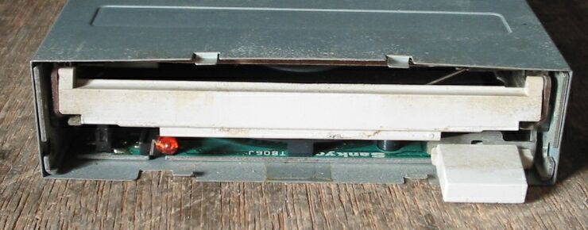
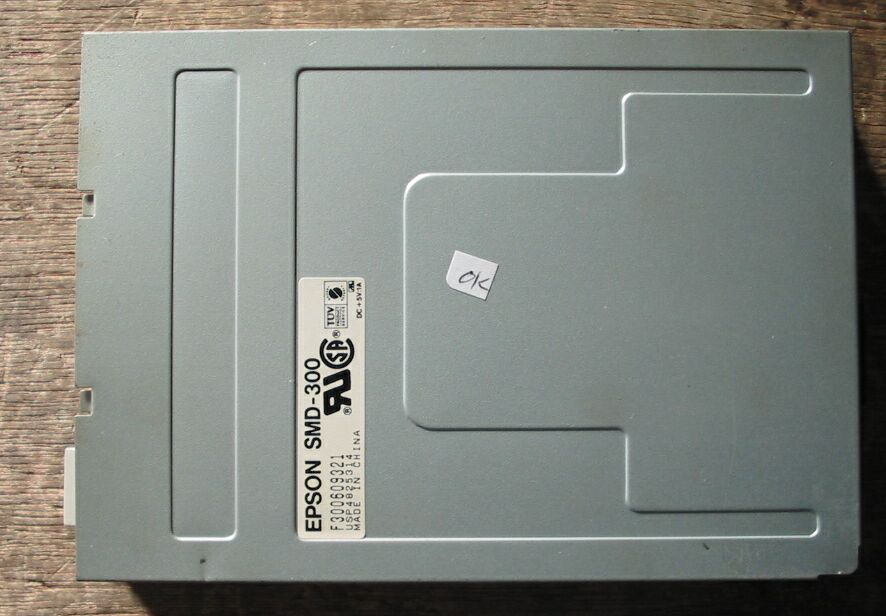
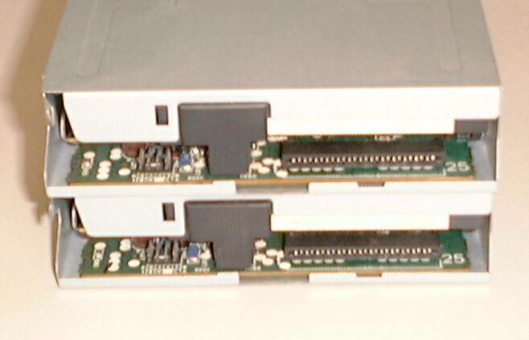
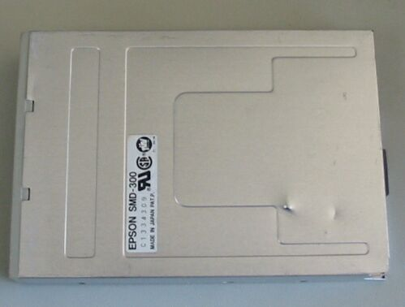
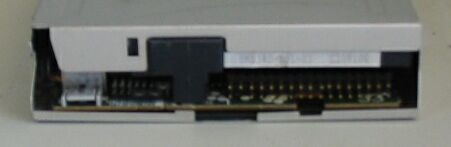

5インチFDD EPSON SMD-300
EPSON SMD-300の写真です。これは、イジェクトボタンがぐらぐらしているのが特徴です。配線は、少し厚めのフィルムケーブル。


コネクタ部分のクローズアップ、8pinのジャンパーが見えます。２基とも、2-3がジャンパーONに
なっています。 
別な型のSMD-300を発見。コネクタがフラットケーブルではなく、36pinです。 使用機種は不明。

コネクタ部分のクローズアップ。

98FDDのページに戻る